class: center, middle # DocVer Softwarepräsentation ### Ken Madlehn, Andre Grellmann, Pia Schreiner --- class: middle ## Inhalt 1. Idee 2. Live Demo 3. Planung 4. Features 5. Genutzte Technologien 6. Fazit 7. Ausblick ??? ### Idee (1 Min) - Pia - Softwareidee - Zielgruppe ### Live Demo (15 Min) ### Planung (15 Min) - Mockups (1 Min) - Pia - Datenbankentwurf (3 Min) - Andre - Systementwurf (5 Min) - Frontend/Backend (Pia) - Gesamtüberblick (Andre) - Kommunikation (3 Min) - Andre - Offline Nutzung Konzeption (3 Min) - Pia ### Features (1 Min- 1 Folie als Übersicht) - Pia - Nutzereinstellungen - Dokumentenverwaltung mit Klassifizierung - Dokumentensuche - Nutzereinstellungen ### Genutzte Technologien (27 Min) - Docker (1 Min) - Ken - OCR (8 Min) - Ken - Oracle DB (8 Min) - Ken - Node JS (5 Min) - Pia - Angular (5 Min) - Pia ### Fazit (1 Min) - Andre ### Ausblick (1 Min) - Andre --- ## Idee - Digitalisierte Dokumente verwalten - User lädt Dokument hoch → Analyse mit OCR - Dokumente kategorisieren - Suche über Dokumentenname & -inhalt - Mobil benutzbar ### Zielgruppe - Von breiter Personengruppe benutzbar - Privatpersonen oder (kleine) Organisationen - Besitzen Geräte mit Browser - Wollen Dokumente digital verwalten - Wollen unterwegs Überblick über Dokumente --- class: middle, center # Live Demo --- class: middle, center # Planung --- ## Mockup - Desktop Ansicht .center[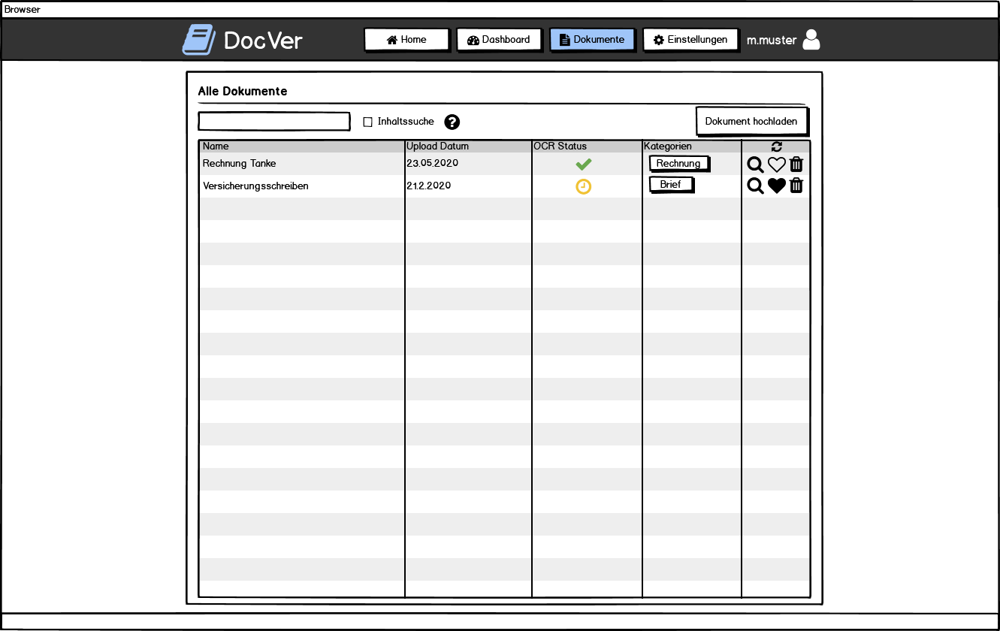] --- ## Mockup - Mobile Ansicht .center[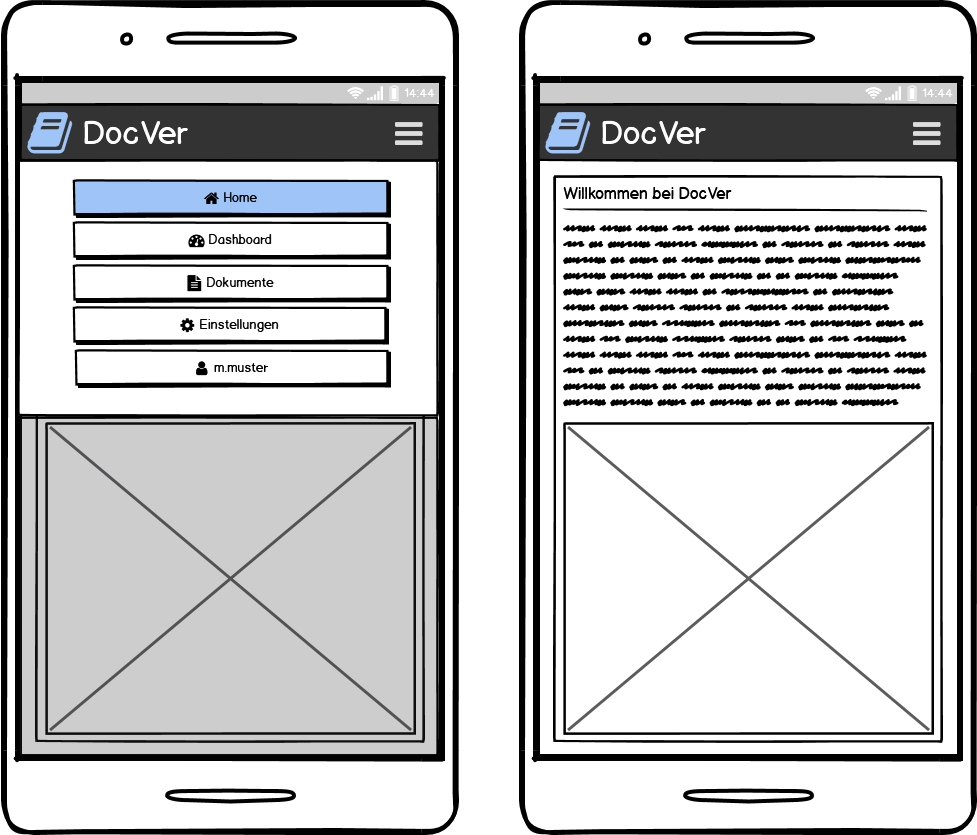] --- ## Datenbankentwurf - ER Diagramm .center[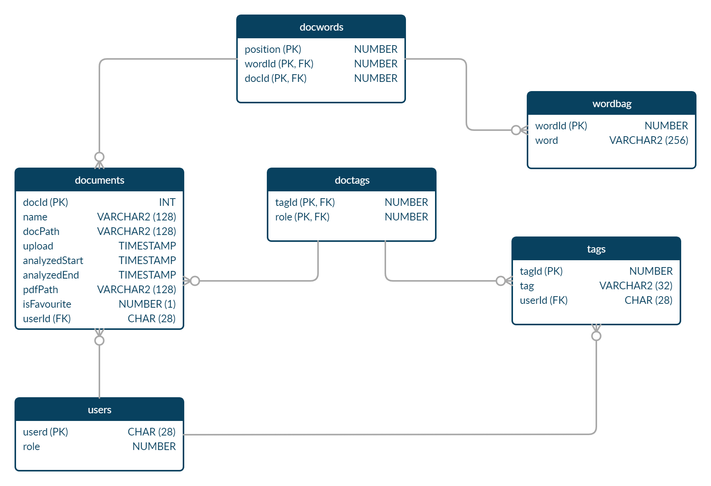] --- ## Datenbankentwurf - Functions .table.table-striped.mt-5[ |Name | Beschreibung| |--------|---------| | F_DOC_SEARCH_BY_KEYWORDS | Gibt eine Liste mit DokumentenIds, die min. eines der Keywords enthalten, zurück. | | F_DOC_GET_FULLTEXT | Setzt den gemerierten Text eines Dokuments zusammen und gibt ihn zurück. | | F_DOC_STORE_ANALYSED | Speichert alle, beim analysieren generierte, Daten in der Datenbank. | ] --- ## Systementwurf - Node Backend .center[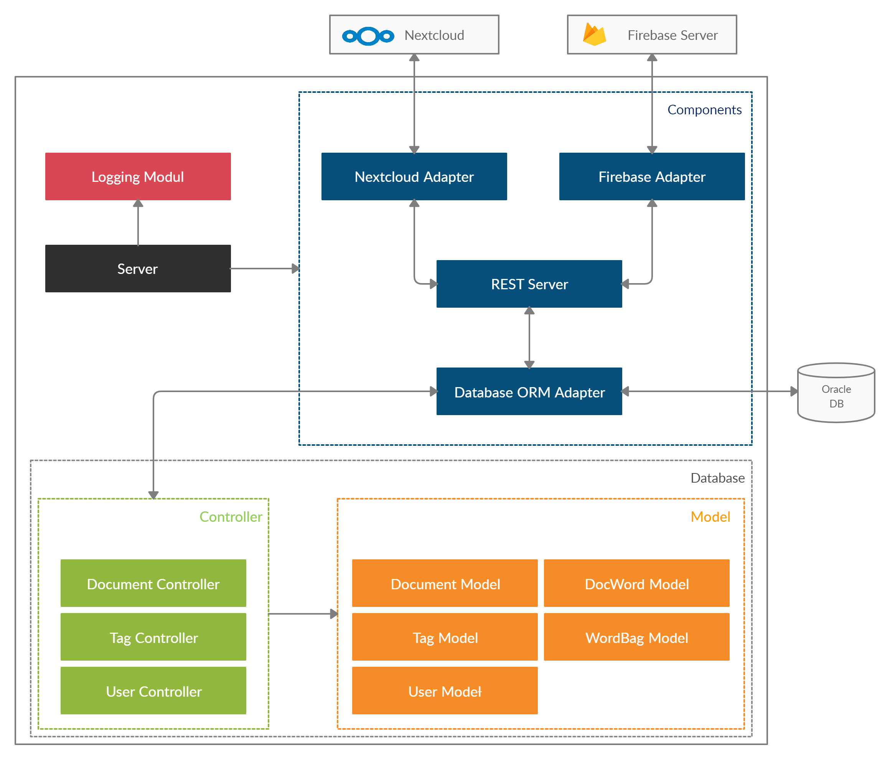] ??? - Modulare Aufteilung - Components → Alle wichtigen Module und Adapter - Logging implementiert für bessere Auswertung nach Deployment auf Server - Datenbanklogik mit ORM und Model/Controller - REST Routen greifen direkt auf DB Funktionalität zu --- ## Systementwurf - Angular Webanwendung .center[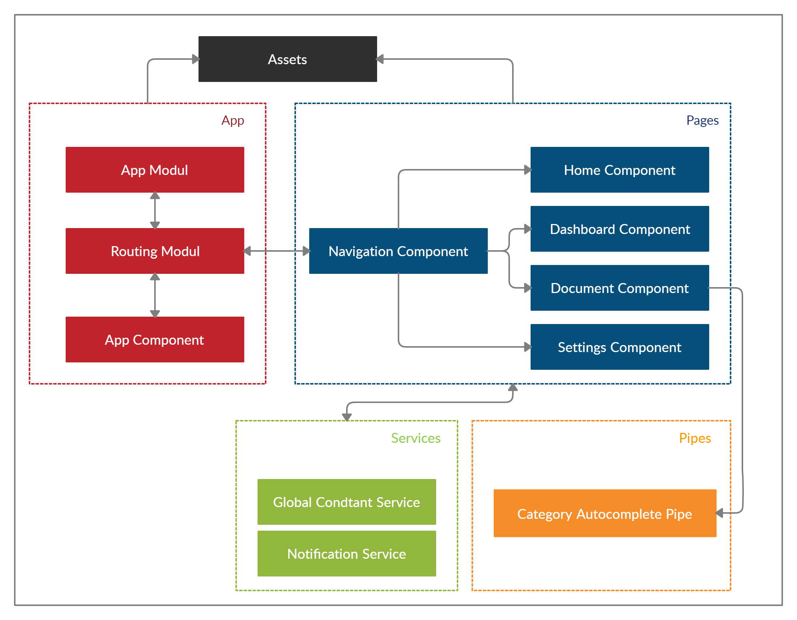] ??? - Inhalte eigene Komponenten - Navigation auch eigener Komponent - App Komponent greift auf Navigations Komponent zu → Inhaltskomponenten werden dynamisch mit Routing unter die Nav geladen - Navigationskomponent lädt dabei die Routen - Es gibt einen Notification Service → zeigt Statusmeldungen an - Es gibt einen globalen Service der globale Variablen und Funktionen für alle Komponenten enthält --- ## Systementwurf - Gesamtüberblick .center[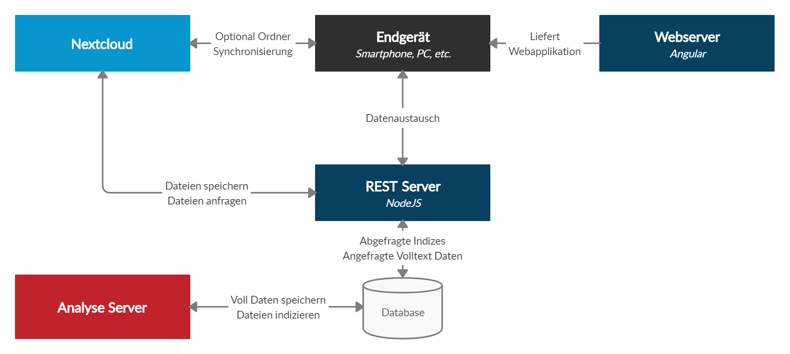] --- ## Kommunikation - Allgemein .content-middle[ 1. Frontend ⇄ Backend (HTTP → REST) 2. Backend ⇄ Datenbank (TCP) 3. Backend ⇄ Nextcloud (HTTP → WebDAV) ] --- ## Kommunikation - Ablauf .center[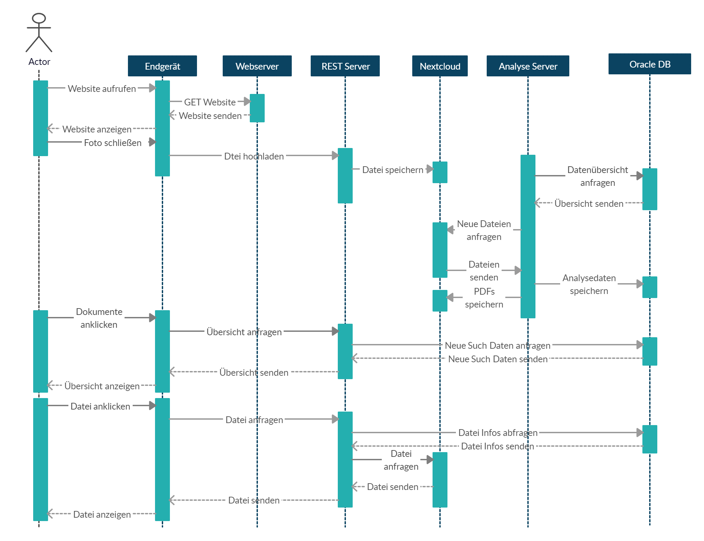] --- ## Offline Nutzung .content-middle[ - Angular Progressive Webapp - Funktioniert mit Service Worker - Dieser cached alle HTML und JS Dateien / fängt Requests ab - Volltextvorschau von einmal geöffneten Dokumenten wird im Cache abgelegt - Im Offlinemodus kann die Volltextvorschau aus dem Cache geladen werden - Funktionen wir Dokumente hochladen und Klassifizierung mit Kategorien nicht möglich ] ??? - Nur Konzeption abgeschlossen - lange Probleme mit dem Service Worker - Begrenzte Zeit auf Grund des verkürzten Semesters - Hoher Workload in anderen Modulen - Fokus lag auf der Funktionalität der restlichen Software → Daher geringere Priorität --- ## Features #### Dokumentenverwaltung mit Klassifizierung - Übersichtliche Darstellung aller Dokumente - Hochladen von Dokumenten - OCR Analyse hochgeladener Dokumente - Detailansicht mit Originaldatei, Volltextvorschau und generierter PDF - Klassifierung in Kategorien - Dashboardansicht #### Dokumentensuche - Filterung der Tabelle anhand von Metadaten - Serverseitige Inhaltssuche basierend auf Keywords #### Nutzereinstellungen - Nutzerdatenverwaltung - Kategorieverwaltung ??? ### Dokumentenverwaltung mit Klassifizierung - Nutzer können Dokumente hochladen um diese zu verwalten - Verwaltete Dokumente werden in einer übersichtlichen Liste dargestellt - In der Detailansicht eines Dokuments, können Nutzer die Originaldatei, eine Volltextvorschau sowie die generierte PDF einsegen - Zur besseren Übersicht können Dokumente mit Hilfe von Kategorien klassifiziert werden - Für die Klassizierung werden Standard Kategorien angeboten. - Nutzer haben Zugriff auf eine Dashboardansicht, welche die letzten Dokumente sowie die Favoriten darstellt ### Dokumentensuche - Filterung der Tabelle anhand von Metadaten (Name, Upload, Kategorien) - Dabei ist eine Filterung der Tabelle sowie eine Inhaltssuche welche den Inhalt der Dokumente filtert möglich ### Nutzereinstellungen - Nutzer können sich registrieren sowie ihre Nutzerdaten aktualisieren - Jeder Nutzer hat die Möglichkeit eigene Kategorien anzulegen --- class: middle, center # Genutzte Technologien --- ## Docker als Environment --- ## OCR --- ## Oracle Datenbank --- ## Node Backend .center[] ??? - Hier nochmal das Strukturdiagramm von vorhin - Ich konzentriere mich auf die Komponenten im blauen Kasten und gehe für diese genauer ins Detail - Dabei erläutere ich was diese machen und zeige Code Beispiele --- ## Database ORM Adapter .center[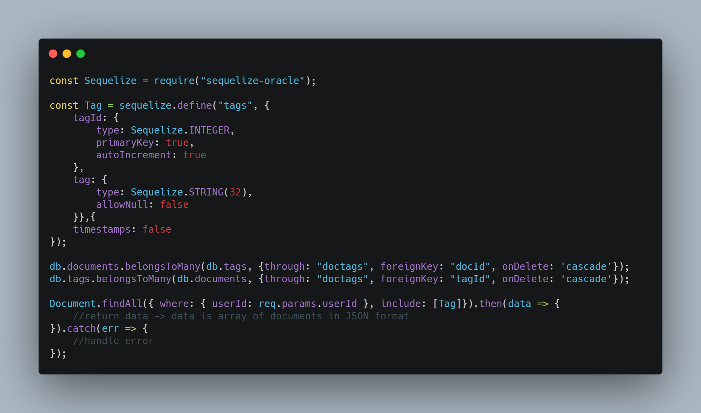] ??? - Die Datenbankanbindung ist mit dem Framework Sequelize umgesetzt - Auf Grund der Oracle Datenbank haben wir einen Fork der Version 3 nutzen müssen - Dieses Code Snippet zeigt das Beispiel einer Model Definition am Beispiel der Kategorien - Außerdem wird die Zuweisung als Association zwischen Kategorie und Dokument gezeigt (Many To Many / n:m) - Nach der Definition und Verbindung zur Datenbank kann man mit den Controller Funktionen schnell mit der DB interagieren --- ## REST Server .center[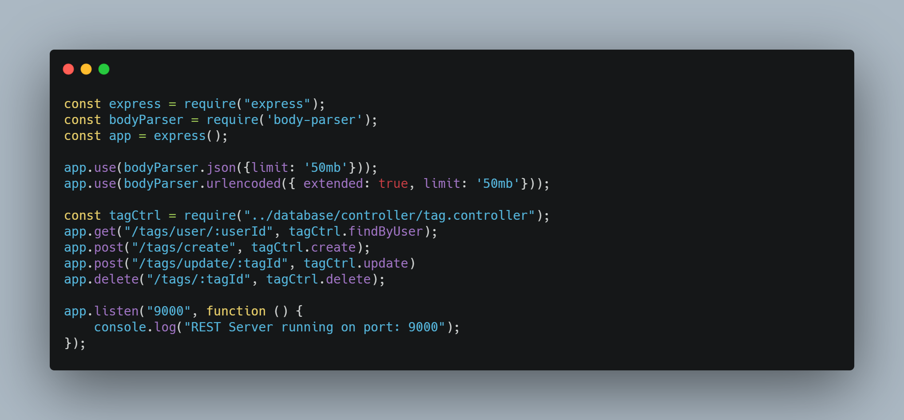] ??? - Für den REST Server haben wir express und body-parser genutzt. Dabei haben wir die Routen wie eben erwähnt in die 3 Basisrouten unterteilt - Dieses Beispiel zeigt die Routen für die Kategorien. - Dabei rufen die Routen direkt die Funktion des Datenbank Controllers von Sequelize auf --- ## Nextcloud Adapter .center[<img src="img/nextcloud_screen.jpg" width="100%" style="margin-top: 30px">] ??? - Um Dateien abzulegen nutzen wir Nextcloud - In der DB wird nur der Pfad zu den Dokumenten gespeichert - Dabei gibt einen ordner userfiles und dann für jeden Nutzer einen Unterordner --- ## Nextcloud Adapter .center[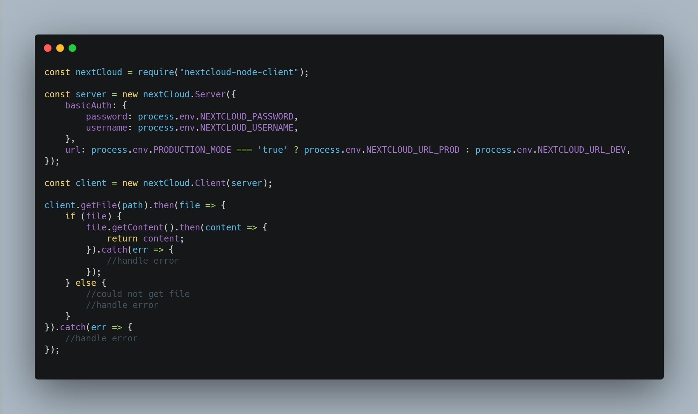] ??? - Für die Anbindung an die Nextcloud verwendet wir das modul nextcloud-node-client - Mit diesem ist es sehr einfach eine Verbindung zur Nextcloud herzustellen - Dieses Snippet zeigt das laden einer Datei aus der Nextcloud mit einem Pfad --- ## Firebase Adapter .center[<img src="img/firebase_screen_admin.jpg" width="100%">] ??? - Bei der Firebase wird grundsätzlich die Verwendung zwischen Admin und Client Bibliothek unterschieden - Admin hat Funktionen wie verifyUser, registerUser - Client hat Funktionen wie LoginUser, sendPasswordReset - Die Verwendung der Admin Bibliothek benötigt ein Dienstkonto und einen privaten Schlüssel (Form einer JSON Datei) - Für die Verwendung der Firebase nutzen wir eine Admin Library im Backend und eine Client Library im Frontend (zu Client sag ich gleich nochmal was genauer) --- ## Firebase Adapter .center[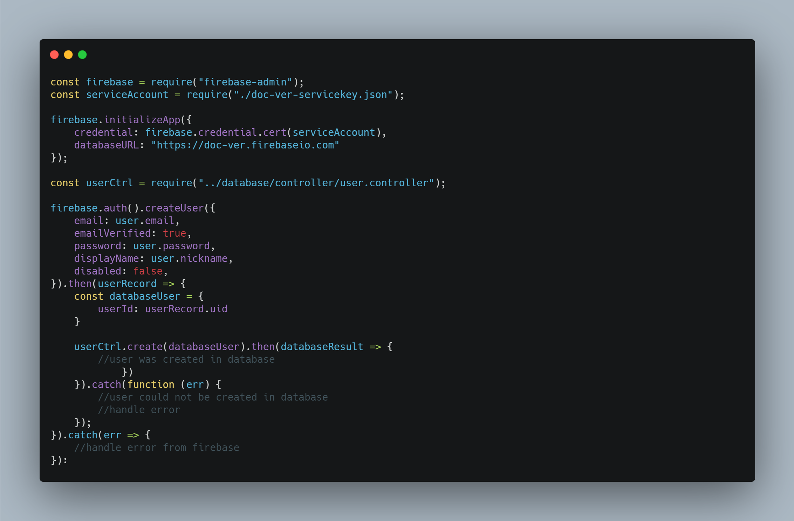] ??? - Um das Admin SDK zu nutzen wird die Lib firebase-admin benötigt - Diese wird mit dem Dienstaccount (Json Datei) registriert → Zugänglich im Firebase Account - Anschließend können auf das auth() Objekt Funktionen aufgerufen werden - Dieses Beispiel zeigt die Nutzerregistrierung --- ## Firebase Adapter .center[<img src="img/firebase_screen.jpg" width="100%" style="margin-top: 50px">] ??? - Nach der Registrierung von Nutzern können diese auch in der Firebase Konsole eingesehen werden - Darstellung mit Email, UID und Last Login - Können manuell aktiviert, deaktiviert sowie gelöscht werden --- ## Angular - Design und Routing - Navigationsleiste Top Fixed → Navigation Component - Komponenten werden in den Content gerendert .center[<img src="img/angular_design.jpg" width="100%">] - Design: Bootstrap - Icons: Material Design Library ??? - Response Layout mit fixierter oberer Navigationsleiste - Funktioniert für Smartphones, Desktop PC und Tablet Ansicht, wobei die Smartphone Ansicht nicht empfohlen wird (auf Grund der vielen Tabellen) - Für Bootstrap haben wir die normale Bootstrap CSS implementiert sowie die NG Bootstrap Bibliothek für Angular (für bestimmte Komponenten) - Da Bootstrap keine Icon Bib enthält, haben wir die Icons aus der Material Design Lib von Google verwendet --- ## Angular - Authentifizierung .center[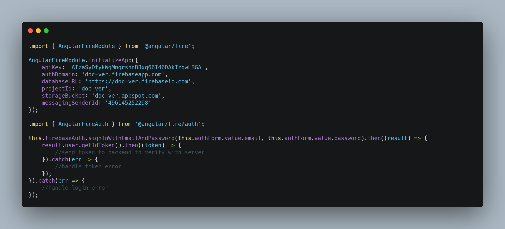] - Speicherung des User Objekts im Local Storage während der Session - Bei Logout löschen des User Objekts - Wenn User Objekt vorhanden → Einblenden von mehr Navigations Optionen ??? - Für die Authentifizierung im Client die Client SDK von Firebase eingebunden (Lib @angular/fire) - Diese muss auch initialisiert werden mit den Informationen über das Projekt - Dies geschieht in Angular innerhalb des App Komponenten - Anschließend kann das AngularFireAuth Objekt in jedem Komponenten importiert und genutzt werden - Auf dieses kann man die Funktionen aufrufen --- ## Angular - PDF Viewer .center[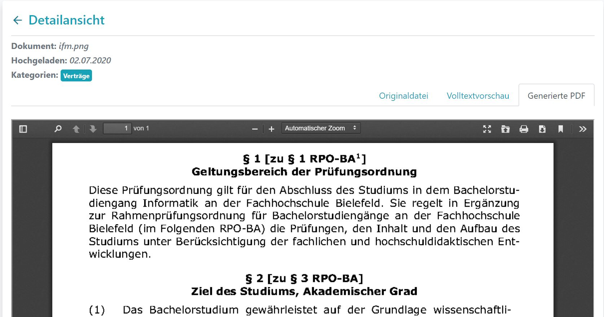] ??? - In der Detailansicht der Dokumente kann man sich die generierte Datei mit einem PDF Viewer ansehen - Haben eine Library verwendet da die HTML5 Embed Funktion von PDFs keine Suchfunktion hat - Detailansicht besteht aus Metadaten und 3 Tabs → Tabs erläutern --- ## Angular - PDF Viewer .center[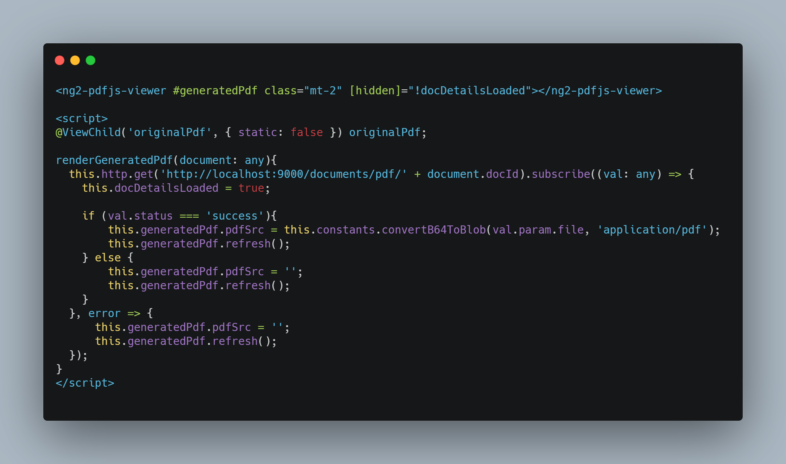] ??? - Bei dem PDF Viewer haben wir die Bibliothek ng2-pdfjs-viewer verwendet - Bei dieser Bib erstellt man in der HTML Seite DOM Element mit ID - Diese ID kann der Komponent als ViewChild implementieren - Dadurch kann dieser auf das DOM Element zugreifen und die PDFSource setzen - In diesem Beispiel wird die PDF vom Server abgerufen, zu Blob Format umgewandelt und in die Property "pdfSrc" gesetzt --- ## Fazit - Projekt .content-middle[ - Solides System trotz begrenzter Zeit - Gute Teamarbeit, Absprachen und Zeiteinteilung ] --- ## Fazit - Technik .content-middle[ - Mit modernen ORM Frameworks sollte man die Oracle DB nicht nutzen - Das Erstellen von DB Funktionen mit Oracle ist mühsam (schlechte Debugging Möglichkeiten) → Anderes DBMS hätte gewählt werden sollen - Nextcloud evtl. etwas langsam ] --- ## Ausblick - Optimierungen .content-middle[ - Mehr Sicherheit der REST-Schnittstellen durch Authentifizierung - Firebase mit eigener Authentifizierungsmöglichkeit ersetzen - Satzzeichen als Wörter behandeln → Suche verbessern - Analysestatus automatisch aktualisieren (Websockets) - Ausloggen beim Ändern der Email durch Passwortbestätigung umgehen ] ??? - Satzzeichen derzeit mit an Wörtern gespeichert --- ## Ausblick - Weitere Features .content-middle[ - Automatische Klassifizierung - Schittstellen für Erweiterungen anbieten - Analyse gesammelter Daten damit - Offlinekonzept implementieren ] ??? - automatische Klassifizierung mit Machine Learning? - Analysebsp: automatisches Fahrtenbuch --- class: middle, center # Vielen Dank für die Aufmersamkeit! ## Gibt es Fragen?